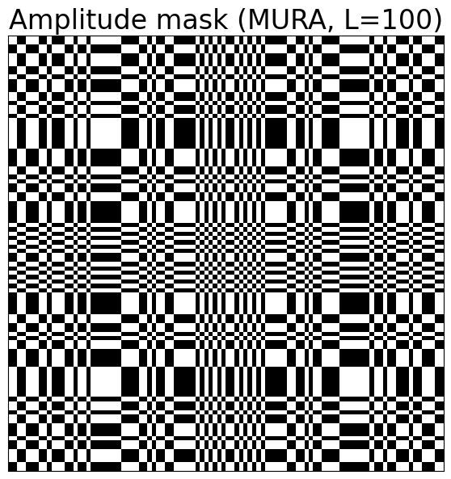 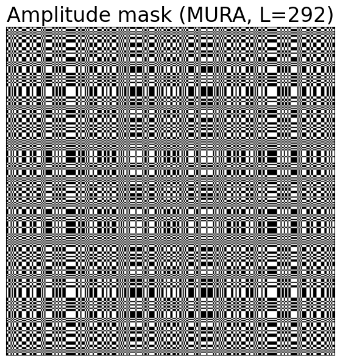


A hardware and software toolkit for lensless computational imaging with Raspberry Pi
Coded apertures are masks that contain a specific pattern of transparent and opaque elements that allow only certain portions of the incoming light or radiation to pass through. They are separable (i.e. can be considered as the outer product of two vectors).
Modified Uniformly Redundant Arrays (MURA):
a MURA (Maximum Length Sequence Uniformly Redundant Array) is constructed by arranging detectors or mask elements in a specific pattern that maximizes the information captured from a scene, often following mathematical principles to achieve uniform redundancy for better image reconstruction.
The code to obtain such masks was inspired from the code available in this repository.
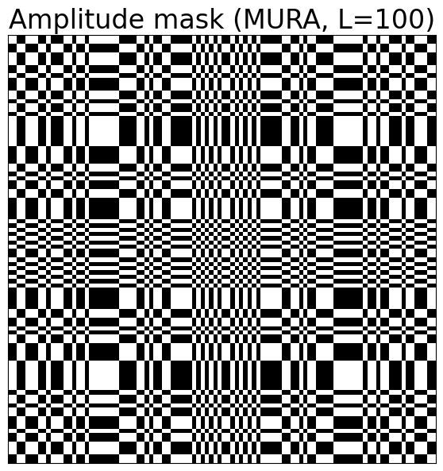 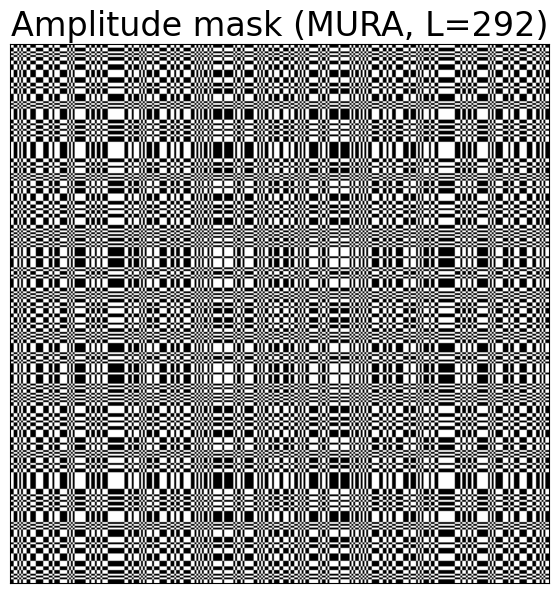
Maximum length sequences (MLS):
maximum Length Sequences (MLS) are pseudo-random binary sequences with periodic values generated by a linear feedback shift register (LFSR) with low cross-correlation and good auto-correlation properties.
They enable efficient light collection capability and adaptability, making them promising candidates for the design of coded masks in lensless imaging.
 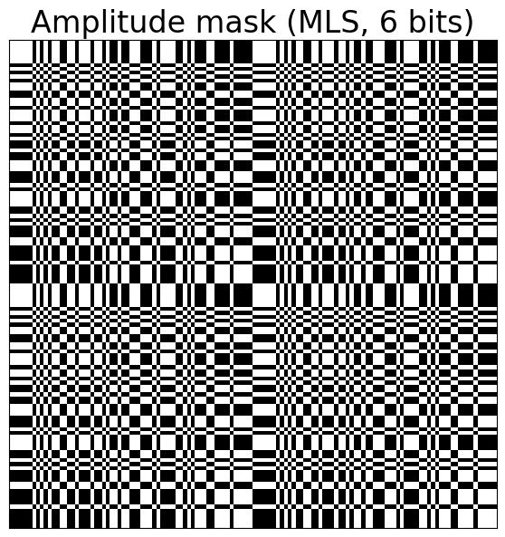 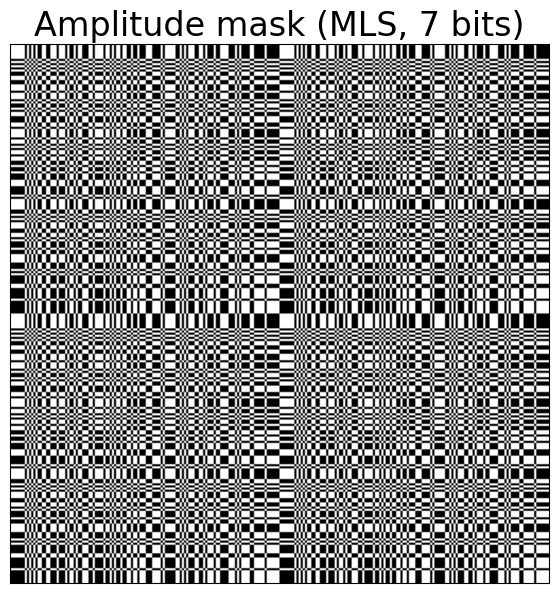 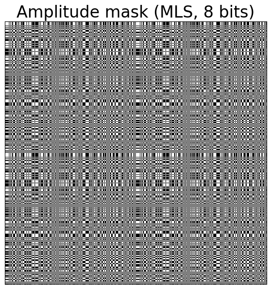
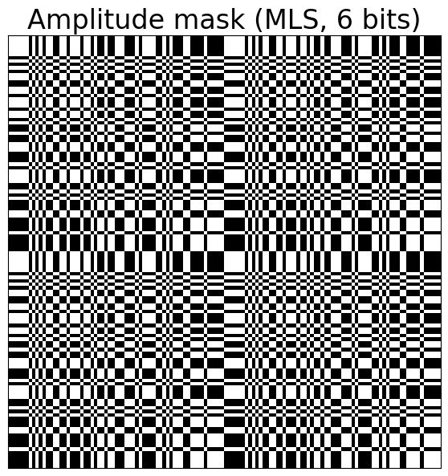 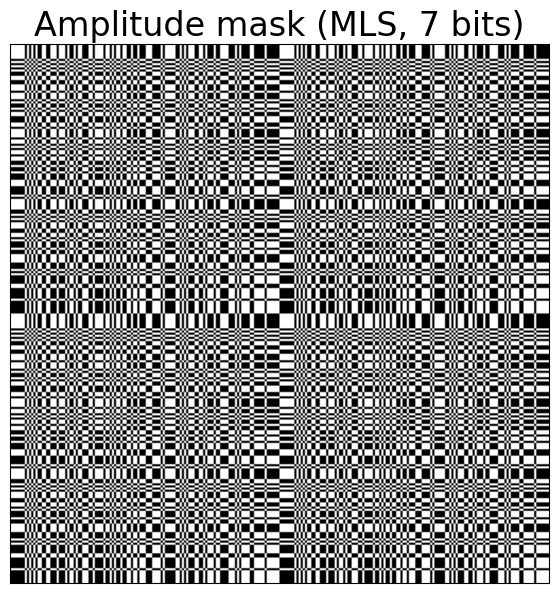 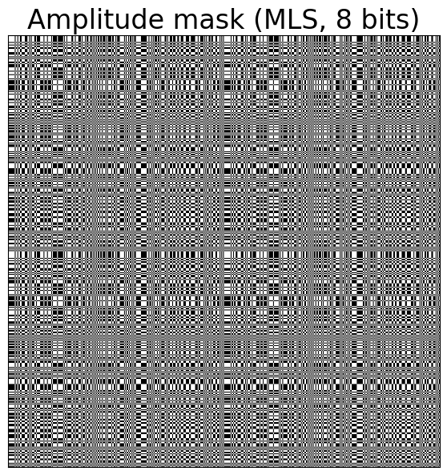
Unlike coded apertures or Fresnel zone apertures, phase contour masks are not amplitude masks, they are phase masks: there are no occlusions, but thickness changes throughout the mask, making the phase of the incoming light changed in the same manner.
The phase contour computation is done by detecting the edges of a Perlin noise (a smooth, continuous random noise pattern used to generate textures). The edge detection was done by using the Canny edge detection implemented in the OpenCV library. Since the basic Perlin noise is to blurry for it to work, we made the edges more easily detectable by rounding the noise so that is becomes binary.
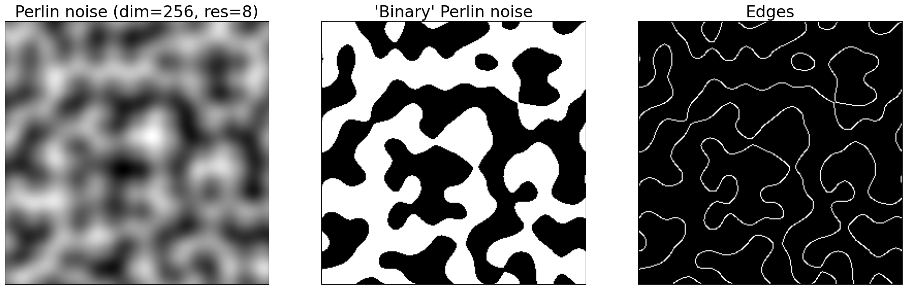
A Fresnel zone aperture (FZA) is a mask that contains a series of concentric circular rings.
It operates on the principle of diffraction: the concentric rings of the zone plate are designed to create constructive and destructive interference patterns, which can be used to focus or manipulate light.
We computed the FZA pattern by using the following transmission function:
$$ T(r) = \frac{1}{2} \left( 1 + \text{sgn} \left( \cos \left( \frac{\pi r^2}{R^2} \right) \right) \right) $$
Such pattern is meant to "simulate" different focal lengths.